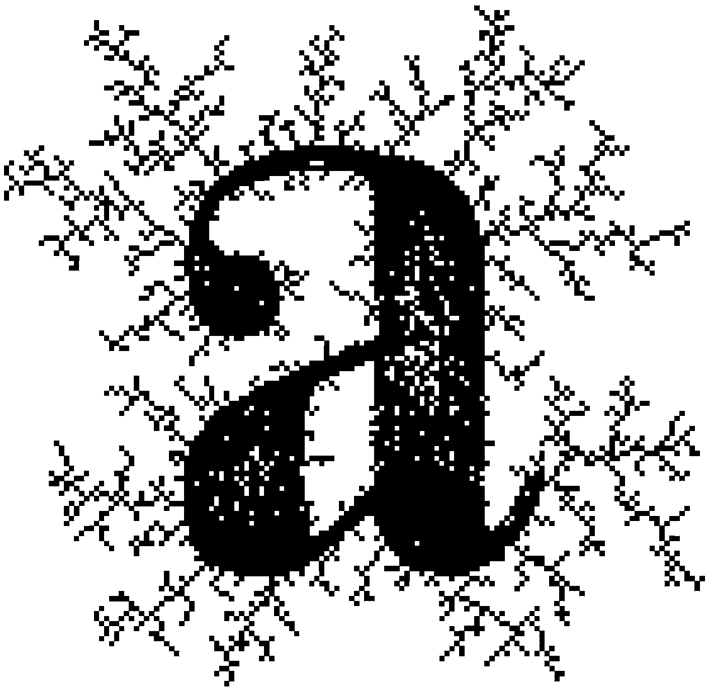
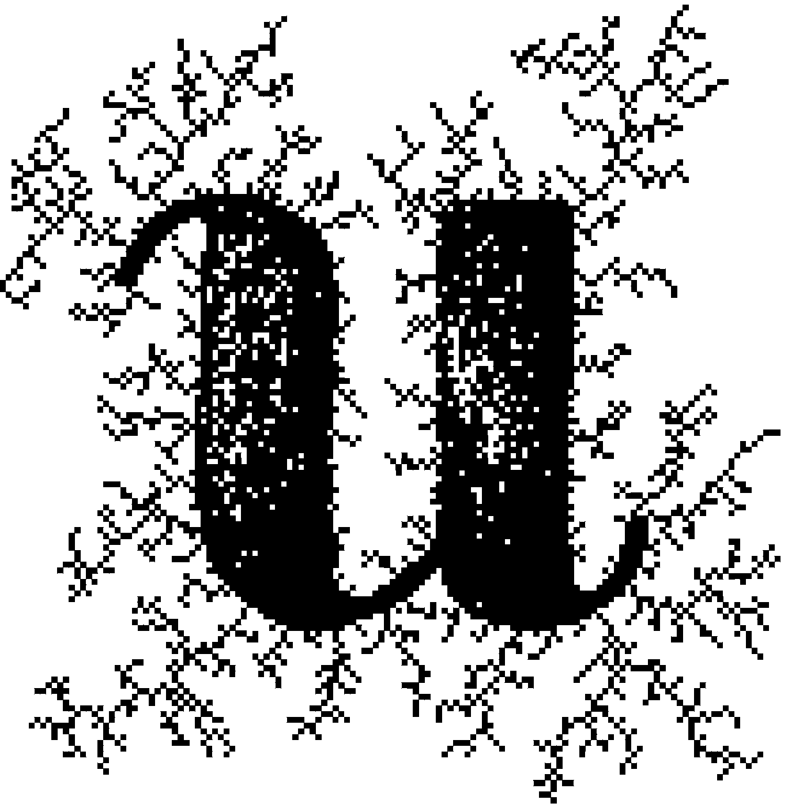
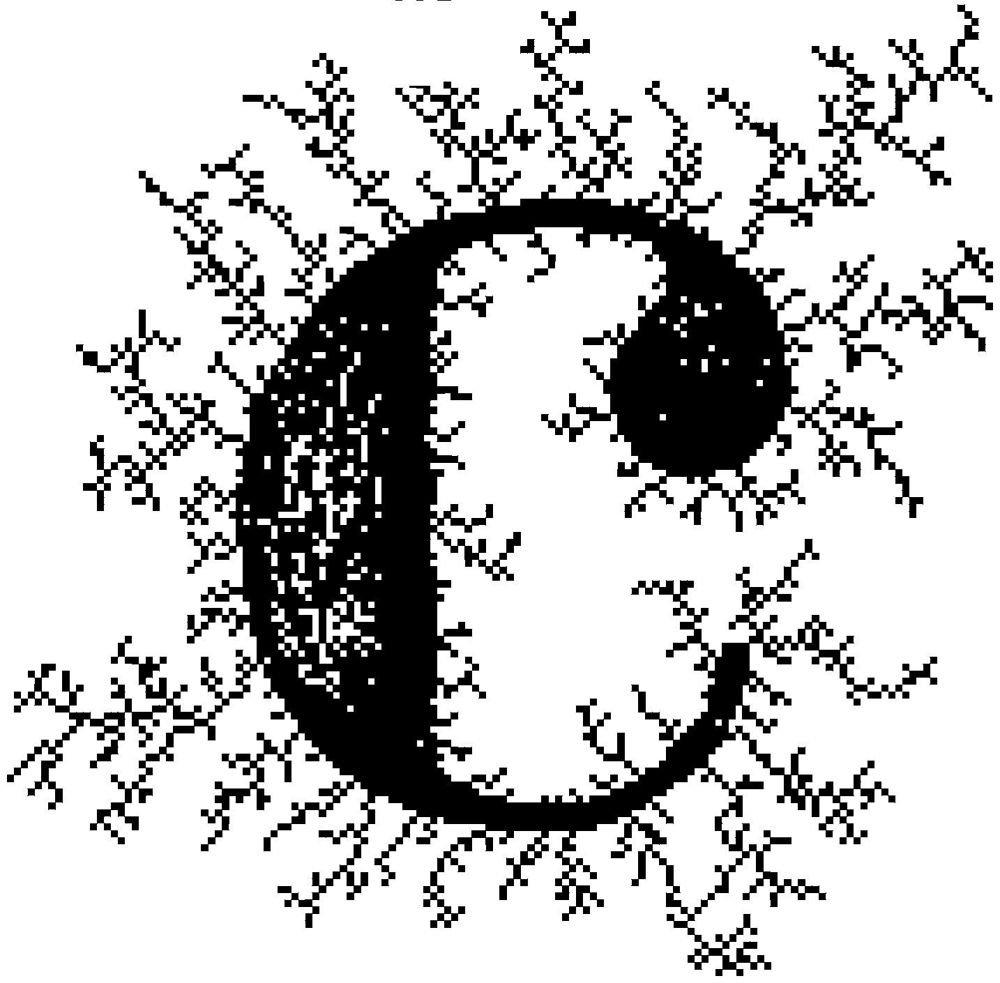

Towards an algorithmic cinema
new project that I find very exciting will occupy me throughout the next twelve months. Thanks to the Conseil des Arts et des Lettres du Québec and the Plan culturel numérique du Québec, I will have the opportunity to do research about digital art—and more specifically, about algorithmic cinema: an experimental animation cinema (most often abstract, but not necessarily so), that is created by writing code to generates images and movement.
Because this cinema is somewhat unknown to the general public and practiced by relatively few artists around the world, I hope to help in demystifying it by maintening a journal of my work during this project. The journal will contain short experimental animations and parts of the creative process—so, a mixture of things that are accessible to all and other things that are more technical or “arcane”, like blocks of code and mathematical formulas. We’ll see how this joyous aggregate ends up looking.
Free software
sing and releasing free software will be an important facet of this projet. Everything I create as part of my research will be released under free licences, so anyone will be free to distribute it, to modify it, and to distribute modified versions of it. The main licences that I will use are the Free Art Licence 1.3, the Gnu Gpl 3.0 Licence and the Apache 2.0 Licence.
Additionally, the software and the learning material around which my research will be articulated will be either free or gratis. I will apply many things learned from a small set of online courses (often called “moocs”, for “massive online open courses”). Here are the courses in question:
- — Introduction to Complexity, by Melanie Mitchell.
- — Introduction to Agent Based Modeling, by William Rand.
- — Algorithms on Graphs, by Daniel Kane.
- — Introduction to Dynamical Systems and Chaos, by Dave Feldman.
- — Machine Learning for Musician and Artists, by Rebecca Feibrink.
- — Intelligence and Learning, by Daniel Shiffman.
A first example
ommencing right away with a first experiment is the best thing to do. The drop caps that you see in this article (the big ornate letters at the beginning of each section of text) were created with a semi-algorithmic method. The letters themselves were hand-drawn using a program I created, and then the root-like patterns surrounding the letters were generated with an algorithm called diffusion limited aggregation. Here is a visualization of this algorithm in action:

Diffusion limited aggregation is relatively simple to explain: the animation above is divided on a grid, and each cell of this grid can either be “awake” or “sleeping”. Any other metaphor could be used. People often talk of live cells and dead cells, but I prefer to let my cells fall asleep and wake up. What matters is that the cells can be in two different states. An awake cell has a colour, and a sleeping cell is black. Between each frame of animation, thousands of invisible ants walk randomly on the grid. Ants can only travel on sleeping cells. When an ant arrives on a cell that has one or more awake neighbours, it awakens the cell where it is currently standing, and then it vanishes. The newly awaken cell is then coloured. That’s it!
The remarkable thing about diffusion limited aggregation is that such a simple system, based largely on randomness (the paths of the walking ants are completely random), is able to generate a distinctly structured pattern. The pattern resembles the roots or the branches of a tree—they have a certain fractal quality, a notion that will be very important for many of my upcoming experiments.
Here is a visualization of this algorithm when it is applied on a grid where a single cell, situated in the middle, is initially “awake”:

I’ll also add that the microscopic “film grain” that is subtly visible in these animations was generated by the same program that created the macroscopic pattern—it’s not an After Effects filter or anything that was added after the fact. The program is written in JavaScript with p5.js, Node.js, and Socket.io, and the rendering of the animation frames was made with Puppeteer (the “new Headless Chrome”) and ffmpeg.
The whole program can be found on GitHub and is released freely under a Gnu Gpl 3.0 Licence. This web page (including text and images, except for the logo of the Conseil des Arts et des Lettres du Québec used at the bottom of the page) is released under a Free Art Licence 1.3.
Sources
I first learned about diffusion limited aggregation from a video tutorial created by Daniel Shiffman and presented on his YouTube channel The Coding Train.
Thanks
I thank the Gouvernement du Québec for the financial support granted to this project in virtue of measure 62 of the Plan culturel numérique du Québec administered by the Conseil des arts et des lettres du Québec.